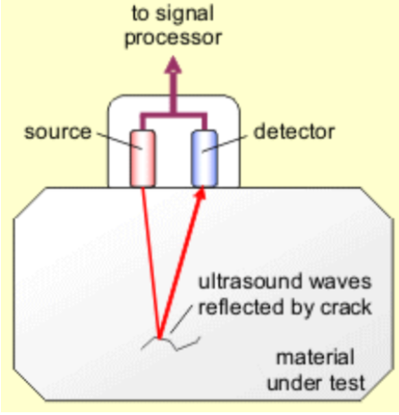

What are sound waves?
Sound waves are a type of longitudinal wave. They are made by vibrating objects and need air particles so they can't travel through vacuums. That is why they can't be heard in space.
How do we hear sound?
When sound waves enter the ear they cause the ear drum and other parts to vibrate which causes the sensation of sound.
The conversion of sound waves to vibrations of solids works over a limited frequency range which restricts the limits of human hearing.
That range is from 20Hz to 20kHz(20,000Hz).
What is ultrasound?
Ultrasound waves have a frequency higher than the upper limit of hearing for humans, so its frequency is above 20kHz(20,000Hz).
Ultrasound waves are partially reflected when they meet a boundary between two different media.
The time taken for the reflections to reach a detector can be used to determine how far away such a boundary is.
This allows ultrasound waves to be used for both medical and industrial imaging.
Ultrasound waves are partially reflected at the flaw and other reflections will happen when the wave reaches the back of the block